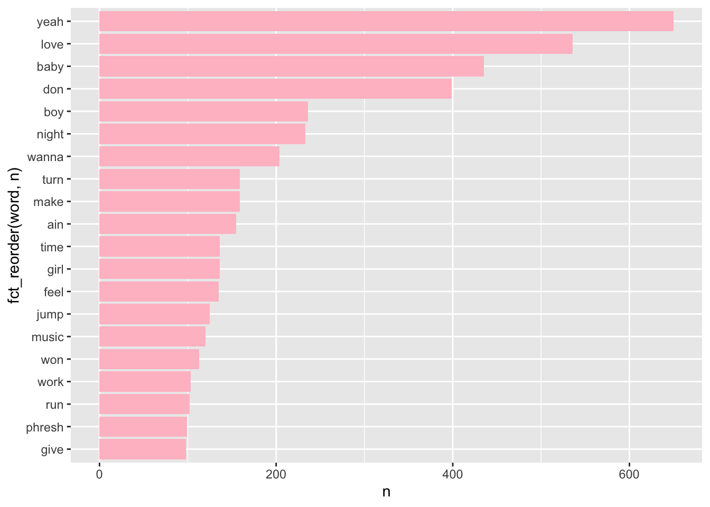
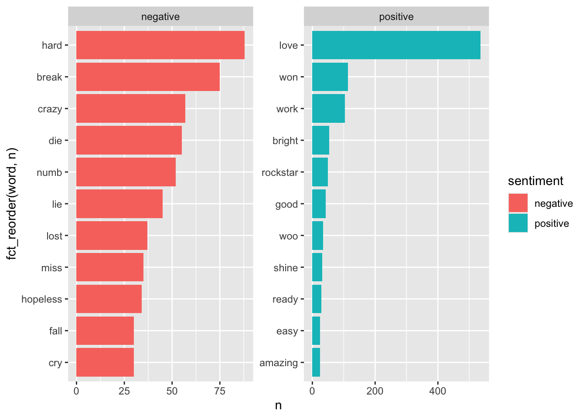
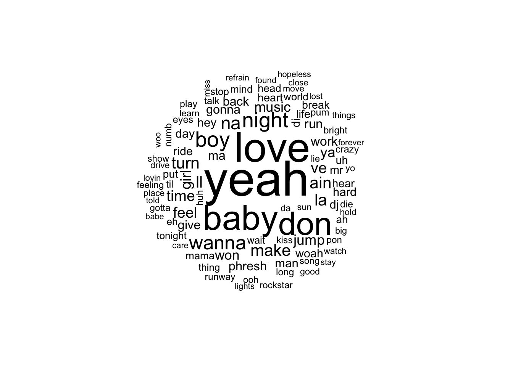
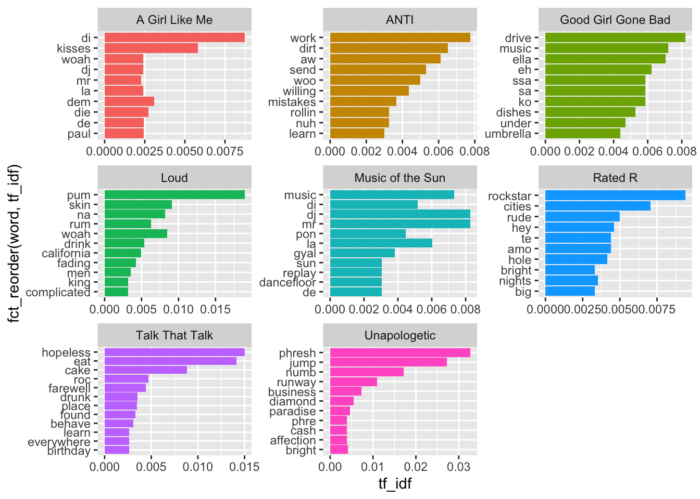
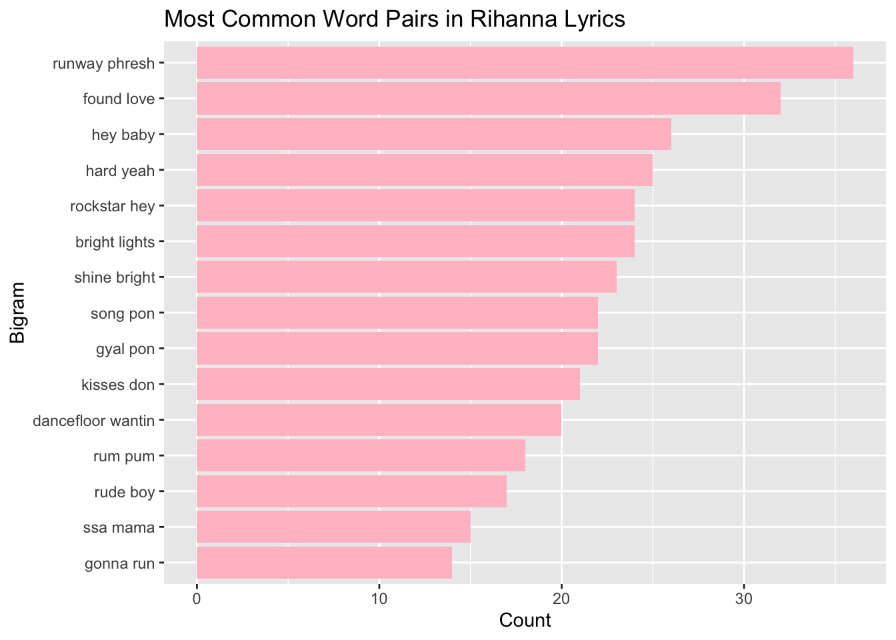

# Convert lyrics into individual words
tidy_lyrics <- rihanna_clean |>
mutate(line = row_number()) |>
unnest_tokens(word, lyrics, token = "words")
tidy_lyrics
rihanna |> slice_tail(n = 10)
tidy_lyrics |> slice_tail(n = 20)Text Analysis
Introduction
Song lyrics contain rich text data that can reveal patterns in language, themes, and emotions used by an artist. In this project, I analyze a dataset containing lyrics from songs by Rihanna. The goal of this analysis is to explore common themes and emotional patterns in Rihanna’s music using text analysis tools in R.
Specifically, I investigate several questions:
- What words appear most frequently in Rihanna’s lyrics?
- What emotional sentiment appears in the lyrics?
- What word pairs (bigrams) appear most often and what themes do they reveal?
The dataset used in this project comes from Kaggle and contains song lyrics from the artist Rihanna. Each observation in the dataset represents a song and includes several variables such as the album name, song title, year of release, number of views, and the full lyrics. The lyrics serve as the primary text data analyzed in this project.Because the lyrics are stored as long text strings, they must be cleaned and transformed before analysis.
Data Cleaning
The dataset was carefully cleaned to remove section labels (“verse,” “chorus”), punctuation, numbers, and repeated markers. Cleaning ensures that analyses reflect meaningful lyrical content rather than artifacts of formatting. Effective preprocessing allows for accurate word frequency counts, sentiment estimation, and bigram detection. Without this step, noise in the text could distort patterns and misrepresent the emotional and thematic content of Rihanna’s lyrics.
Tidy Text Mining
tidy_lyrics_clean <- rihanna_clean |>
mutate(
# convert lyrics to lowercase
lyrics = str_to_lower(lyrics),
# remove punctuation
lyrics = str_remove_all(lyrics, "[[:punct:]]"),
# remove numbers
lyrics = str_remove_all(lyrics, "[0-9]"))Stop words
# Remove stop words
smart_stopwords <- get_stopwords(source = "smart")
tidy_lyrics_clean <- tidy_lyrics |>
anti_join(smart_stopwords)
tidy_lyrics_cleanMost common words
Joining with `by = join_by(word)`
The most frequently occurring words in Rihanna’s lyrics reveal the central themes of her music. The top words include “you” (2342), “the” (1392), “and” (820), “yeah” (650), “that” (584), “love” (536), “baby” (435), and “like” (427). Excluding common stop words such as “the” and “and,” we can see that words like “love,” “baby,” and “yeah” dominate, reflecting her focus on relationships, attraction, and emotional expression. High-frequency words such as these also reflect the repetitive nature of pop and R&B lyrics, where choruses and hooks repeat key words throughout a song. Additionally, stylistic words like “yeah” show Rihanna’s distinctive vocal and musical style. Overall, the horizontal bar graph counts provide a clear view of the vocabulary that defines her lyrical identity.
Sentiment analysis

Joining with `by = join_by(word)`
The sentiment analysis, using the Bing lexicon, shows that negative sentiment words appear more frequently than positive ones across Rihanna’s lyrics. When examining the top ten positive and negative words, the highest positive word is “love,” while the highest negative word is “hard.” This reflects the dual emotional landscape in Rihanna’s songs. She addresses love, joy, and empowerment, but also explores heartbreak, struggle, and conflict. Pop and R&B songs often tell stories that combine pleasure and pain, and this mixed sentiment captures that narrative complexity. Although the lexicon-based sentiment analysis provides a useful overview, it does not account for context, negation, or sarcasm. For example, “not love” could still be counted as positive if “love” is treated in isolation. Nevertheless, the analysis effectively highlights the emotional themes present across her discography.
Wordcloud

The word cloud emphasizes the most frequently used words, with “yeah,” “love,” and “baby” appearing largest, signaling their prominence in Rihanna’s songs. These terms reinforce the themes identified in the horizontal bar chart and sentiment analyses: romance, personal relationships, and vocalized expression. While word clouds highlight frequency rather than contextual importance, they are an intuitive visual tool for identifying key motifs. The repeated prominence of words like “love” and “baby” aligns with the lyrical focus on interpersonal emotion and attraction.
Calculating tf-dif

The TF-IDF analysis of lyrics by Rihanna highlights distinctive words across several albums, revealing how themes vary throughout her discography. In A Girl Like Me and Music of the Sun, words such as “dj,” “di,” “mr,” and “pon” appear frequently, reflecting strong Caribbean and dancehall influences along with themes of music and nightlife. In Good Girl Gone Bad, terms like “drive,” “music,” and “umbrella” highlight themes of pop stardom and relationships, while still maintaining a dance-oriented sound. Albums such as Loud and Talk That Talk show words like “drink,” “skin,” “cake,” and “birthday,” emphasizing party culture, sensuality, and celebration. In contrast, Rated R features words like “rockstar,” “rude,” and “nights,” suggesting a darker, more rebellious tone, while Unapologetic includes words such as “phresh,” “jump,” and “numb,” reflecting confidence and personal identity. Finally, ANTI highlights words like “work,” “dirt,” and “mistakes,” suggesting themes of relationships, effort, and emotional complexity. Overall, the TF-IDF results show that Rihanna’s lyrics often balance themes of nightlife, empowerment, and relationships, while also reflecting stylistic shifts across her albums.
Bigram analysis

Bigram analysis examines pairs of consecutive words, capturing common phrases and lyrical motifs that single-word analysis cannot reveal. From the dataset, the most frequent bigrams are: “runway phresh” (36), “found love” (32), “hey baby” (26), “hard yeah” (25), “bright lights” (24), “rockstar hey” (24), “shine bright” (23), “gyal pon” (22), “song pon” (22), “kisses don” (21), “dancefloor wantin” (20), “rum pum” (18), “rude boy” (17), “ssa mama” (15), “gonna run” (14). Many of these bigrams directly reflect Rihanna’s romantic and relational themes—for example, “found love,” “hey baby,” and “kisses don”, while others capture stylistic expressions and Caribbean-influenced phrasing like “gyal pon” and “rum pum.” Bigrams such as “hard yeah” or “bright lights” also reflect emotional intensity and party/nightlife motifs that are characteristic of pop and R&B lyrics. Because choruses and hooks repeat phrases across songs, these bigrams are especially useful for identifying signature lyrical motifs and the stylistic language that defines Rihanna’s music. Bigrams reveal not only common vocabulary but also the structure and thematic flow of her lyrics. They highlight the combination of romantic storytelling, empowerment, and distinctive stylistic choices that appear across multiple tracks.
Conclusion
Song lyrics contain rich text data that can reveal patterns in language, themes, and emotions used by an artist. Analyzing the lyrics of Rihanna reveals recurring themes of love, relationships, and emotional expression, with frequent words such as “love,” “baby,” and “yeah” dominating her vocabulary. Sentiment analysis shows that while positive words like “love” are common, negative words such as “hard” appear slightly more frequently, reflecting the emotional complexity of her songs that combine joy, heartbreak, and personal struggle.
Bigram analysis further illuminates her lyrical style and themes. Phrases such as “found love,” “hey baby,” “runway phresh,” and “gyal pon” highlight both romantic storytelling and distinctive stylistic choices, including Caribbean-influenced expressions and repeated choruses. TF-IDF analysis adds nuance by showing how specific words are characteristic of particular albums, suggesting evolving themes and artistic focus across her discography. For example, early albums such as Music of the Sun and A Girl Like Me contain distinctive Caribbean and dancehall-inspired words like “dj,” “di,” and “pon,” reflecting her musical roots. Later albums show shifts in tone and theme: Good Girl Gone Bad emphasizes pop stardom and relationships with words like “music” and “umbrella,” while Loud and Talk That Talk feature vocabulary tied to nightlife, celebration, and sensuality such as “drink,” “cake,” and “birthday.” Albums like Rated R and Unapologetic highlight a more rebellious and confident tone with words like “rockstar,” “rude,” and “phresh,” while ANTI reflects emotional complexity and personal reflection with terms such as “work,” “mistakes,” and “willing.”
Overall, Rihanna’s lyrics demonstrate a balance between catchy, repetitive hooks and emotionally rich, thematic storytelling, with both unigrams and bigrams reflecting her unique voice in pop and R&B. This analysis illustrates how text analysis tools can uncover meaningful patterns in song lyrics, providing insights into both the language and emotional content of an artist’s work, as well as how these elements evolve across different albums throughout her career.